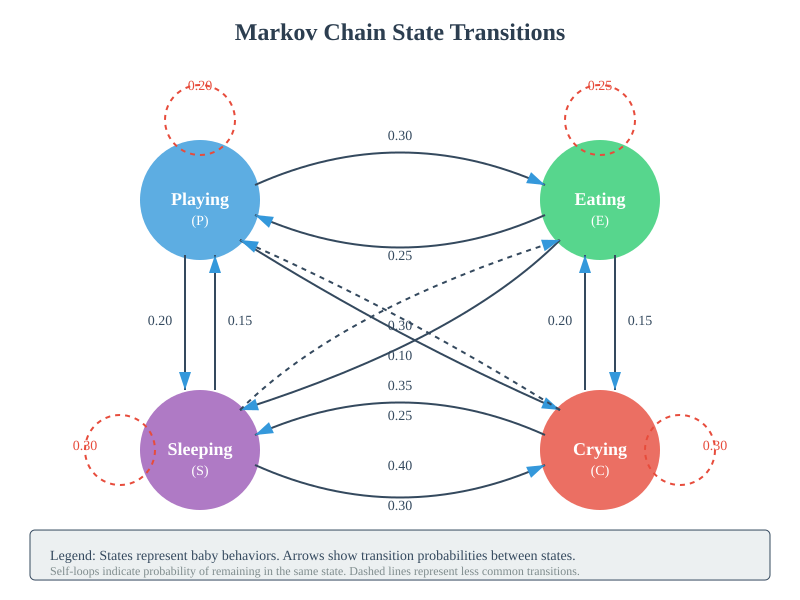
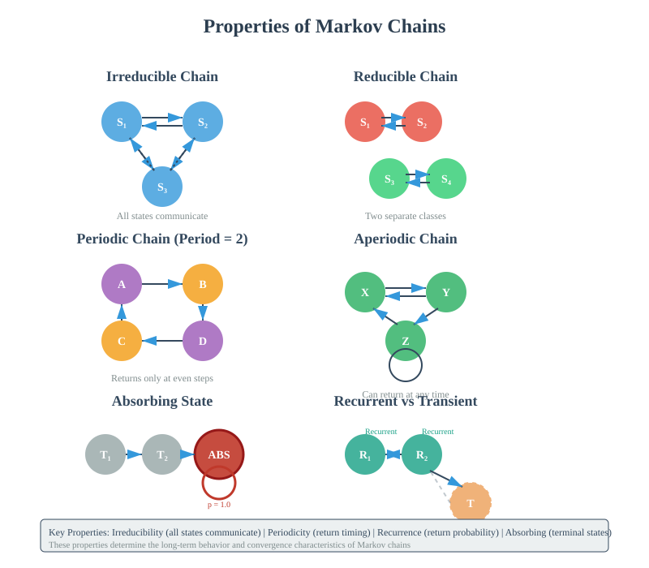
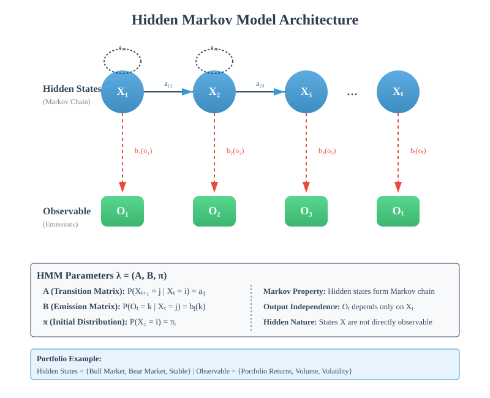
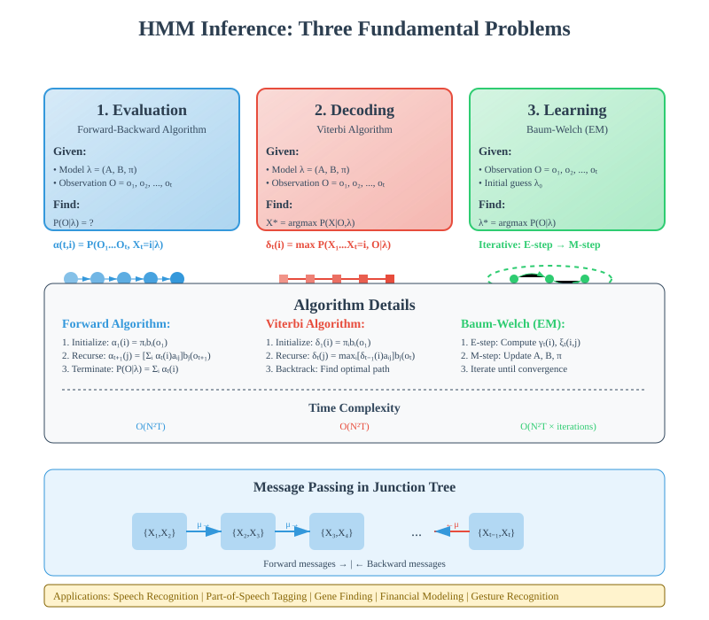

Markov Chains and Hidden Markov Models: A Comprehensive Guide
📚 Quick Navigation
- Introduction
- Markov Chains Fundamentals
- Mathematical Foundations
- Properties of Markov Chains
- Hidden Markov Models
- HMM Architecture
- Applications
- Implementation Examples
- References & Further Reading
Introduction
Markov chains and Hidden Markov Models (HMMs) are fundamental probabilistic models that have revolutionized fields ranging from Google's PageRank algorithm to speech recognition systems. This comprehensive guide explores both the theoretical foundations and practical applications of these powerful mathematical tools.
Key Learning Objectives:
- Understanding Markov Property: Master the concept that future states depend only on the present, not the past
- Transition Probabilities: Learn how to model state changes using probability matrices
- Hidden vs Observable: Distinguish between observable and hidden states in complex systems
- Real-world Applications: Apply these models to solve practical problems in various domains



Markov Chains Fundamentals
What is a Markov Chain?
A Markov Chain is a stochastic process that satisfies the Markov property - the fundamental principle that the future is independent of the past, given the present state.
Formal Definition:
P(Xₙ₊₁ = xₙ₊₁ | Xₙ = xₙ, Xₙ₋₁ = xₙ₋₁, ..., X₀ = x₀) = P(Xₙ₊₁ = xₙ₊₁ | Xₙ = xₙ)
Core Components:
- State Space (S): The set of all possible states the system can occupy
- Transition Probabilities: The likelihood of moving from one state to another
- Initial Distribution: The probability distribution over states at time t=0
- Transition Matrix (P): A matrix containing all transition probabilities
Baby Behavior Example
Consider modeling a baby's behavior with the following states:
State Space:
- Playing (P): Baby is actively engaged with toys
- Eating (E): Baby is consuming food
- Sleeping (S): Baby is resting
- Crying (C): Baby is distressed
Transition Probabilities Example:
From Playing:
- To Eating: 0.3
- To Sleeping: 0.2
- To Crying: 0.3
- Stay Playing: 0.2

Mathematical Foundations
Transition Matrix
The transition matrix P is a stochastic matrix where each element pᵢⱼ represents the probability of transitioning from state i to state j.
Properties of Transition Matrix:
- Non-negative entries: All pᵢⱼ ≥ 0
- Row stochastic: Each row sums to 1
- Square matrix: Dimensions n × n for n states
Chapman-Kolmogorov Equation:
P⁽ᵐ⁺ⁿ⁾ = P⁽ᵐ⁾ × P⁽ⁿ⁾
This equation allows us to compute multi-step transition probabilities.
Stationary Distribution
A probability distribution π is stationary if:
π = πP
Interpretation:
- Equilibrium state: The long-run proportion of time spent in each state
- Invariant measure: Distribution remains unchanged under transitions
- Limiting behavior: Often represents the system's steady state
Discrete vs Continuous Time
Discrete-Time Markov Chains (DTMC):
- Transitions occur at specific time points: t = 0, 1, 2, ...
- Governed by transition matrix P
- Evolution equation: P(Xₙ₊₁) = P(Xₙ) × P
Continuous-Time Markov Chains (CTMC):
- Transitions can occur at any time
- Governed by rate matrix Q
- Evolution equation: dP(t)/dt = P(t)Q
Properties of Markov Chains
Irreducibility
A Markov chain is irreducible if it is possible to reach any state from any other state.
Mathematical Definition:
∀i,j ∈ S, ∃n > 0 : P⁽ⁿ⁾ᵢⱼ > 0
Practical Implications:
- No isolated subsets: All states communicate with each other
- Single communicating class: The entire state space forms one class
- Ergodic theorems apply: Long-run behavior is well-defined
Periodicity
A state i has period k if:
k = gcd{n : P⁽ⁿ⁾ᵢᵢ > 0}
Classification:
- Aperiodic: Period k = 1 (can return at any time)
- Periodic: Period k > 1 (returns only at multiples of k)
Recurrence and Transience
Recurrent State:
- Definition: Starting from state i, the probability of returning to i is 1
- Mathematical condition: ∑ₙ P⁽ⁿ⁾ᵢᵢ = ∞
- Types:
- Positive recurrent: Expected return time is finite
- Null recurrent: Expected return time is infinite
Transient State:
- Definition: Positive probability of never returning
- Mathematical condition: ∑ₙ P⁽ⁿ⁾ᵢᵢ < ∞
Ergodicity
A state is ergodic if it is:
- Aperiodic
- Positive recurrent
An irreducible Markov chain is ergodic if all its states are ergodic.
Absorbing States
A state i is absorbing if:
pᵢᵢ = 1 and pᵢⱼ = 0 for all j ≠ i
Properties:
- Cannot leave: Once entered, the chain stays forever
- Terminal state: Represents end conditions in many models
- Absorption probability: Can compute probability of reaching from any state

Hidden Markov Models
Introduction to HMMs
Hidden Markov Models extend Markov chains by introducing a distinction between hidden states and observable outputs. The true state of the system is not directly observable, but we can observe outputs that depend probabilistically on the hidden states.
Key Assumptions:
- Markov Assumption: Hidden states follow a Markov chain
- Output Independence: Observations depend only on current hidden state
Formal Definition:
An HMM is characterized by:
λ = (A, B, π)
Where:
- A: State transition probability matrix
- B: Emission probability matrix
- π: Initial state distribution
Components of HMM
Hidden States (X):
- Unobservable system states
- Follow Markov property
- Denoted as: X = {x₁, x₂, ..., xₙ}
Observable States (O):
- What we can measure or observe
- Depend on hidden states
- Denoted as: O = {o₁, o₂, ..., oₘ}
Transition Probabilities (A):
aᵢⱼ = P(Xₜ₊₁ = j | Xₜ = i)
Emission Probabilities (B):
bⱼ(k) = P(Oₜ = k | Xₜ = j)
Portfolio Returns Example
Consider the portfolio returns scenario from the document:
Hidden States:
- Bull Market: High growth rates
- Bear Market: Low or negative growth rates
- Stable Market: Moderate growth rates
Observable States:
- Portfolio Returns: The actual returns we observe
- Trading Volume: Market activity levels
- Volatility Index: Market uncertainty measures
The Challenge:
Without knowing the true market state (hidden), we must infer it from observable returns and other market indicators.

HMM Architecture
Three Fundamental Problems
1. Evaluation Problem:
Given model λ and observation sequence O, compute P(O|λ).
Solution: Forward-Backward Algorithm
α(t,i) = P(O₁, O₂, ..., Oₜ, Xₜ = i | λ)
2. Decoding Problem:
Given model λ and observation sequence O, find the most likely hidden state sequence.
Solution: Viterbi Algorithm
δₜ(i) = max P(X₁, X₂, ..., Xₜ = i, O₁, O₂, ..., Oₜ | λ)
3. Learning Problem:
Given observation sequence O, estimate model parameters λ.
Solution: Baum-Welch Algorithm (EM for HMMs)
Graphical Model Perspective
HMMs can be viewed as directed graphical models (Bayesian Networks):
Structure:
- Hidden nodes: Form a chain with directed edges
- Observable nodes: Connected to hidden nodes
- Conditional independence: Observations are independent given hidden states
D-separation Properties:
- Past and future are d-separated by present
- Observations are d-separated given their hidden states
Junction Tree Representation
For inference in HMMs, we can use junction tree algorithms:
Clique Structure:
- State cliques: Contain adjacent hidden states
- Observation cliques: Contain hidden state and its observation
Message Passing:
- Forward messages: Propagate information from past
- Backward messages: Propagate information from future

Applications
Finance and Economics
Market State Modeling:
- Hidden states: Economic regimes (expansion, recession)
- Observations: Stock prices, GDP, employment data
- Applications: Risk management, portfolio optimization
Credit Risk Assessment:
- Hidden states: Borrower creditworthiness levels
- Observations: Payment history, financial ratios
- Applications: Default prediction, loan pricing
Natural Language Processing
Speech Recognition:
- Hidden states: Phonemes or words
- Observations: Audio signal features
- Applications: Voice assistants, transcription services
Part-of-Speech Tagging:
- Hidden states: Grammatical categories (noun, verb, etc.)
- Observations: Words in text
- Applications: Machine translation, text analysis
Bioinformatics
Gene Finding:
- Hidden states: Gene regions (exon, intron, intergenic)
- Observations: DNA sequence
- Applications: Genome annotation, disease research
Protein Structure Prediction:
- Hidden states: Secondary structure elements
- Observations: Amino acid sequence
- Applications: Drug design, functional analysis
Web and Technology
PageRank Algorithm:
- States: Web pages
- Transitions: Link structure
- Application: Google's original page ranking system
User Behavior Modeling:
- Hidden states: User intent or mood
- Observations: Click patterns, dwell time
- Applications: Recommendation systems, personalization
Implementation Examples
Python Implementation with NumPy
Basic Markov Chain Simulation:
import numpy as np
class MarkovChain:
def __init__(self, transition_matrix, states):
self.P = np.array(transition_matrix)
self.states = states
self.n_states = len(states)
def simulate(self, initial_state, n_steps):
current = initial_state
trajectory = [current]
for _ in range(n_steps):
probs = self.P[current]
current = np.random.choice(self.n_states, p=probs)
trajectory.append(current)
return trajectory
def stationary_distribution(self):
eigenvalues, eigenvectors = np.linalg.eig(self.P.T)
stationary = eigenvectors[:, np.isclose(eigenvalues, 1)]
stationary = stationary[:, 0].real
return stationary / stationary.sum()
HMM Implementation with hmmlearn:
from hmmlearn import hmm
import numpy as np
# Create Gaussian HMM
model = hmm.GaussianHMM(n_components=3, covariance_type="full")
# Training data (observations)
X = np.random.randn(100, 1)
# Fit model
model.fit(X)
# Predict hidden states
hidden_states = model.predict(X)
# Generate new samples
samples, states = model.sample(50)
🔗 Colab Integration

Interactive Demonstrations:
- Markov Chain Simulator: Visualize state transitions
- HMM Training: Learn parameters from data
- Viterbi Decoder: Find most likely hidden sequences
- Portfolio Analysis: Apply HMMs to financial data
References & Further Reading
📚 Essential Textbooks:
- "Pattern Recognition and Machine Learning" by Christopher Bishop (2006) - Chapter 13 on Sequential Data
- "Machine Learning: A Probabilistic Perspective" by Kevin Murphy (2012) - Chapters on Markov Models
- "Probabilistic Graphical Models" by Daphne Koller and Nir Friedman (2009) - Comprehensive treatment
📄 Key Papers:
- Baum, L.E. et al. (1970). "A Maximization Technique Occurring in the Statistical Analysis of Probabilistic Functions of Markov Chains" - Annals of Mathematical Statistics
- Rabiner, L.R. (1989). "A Tutorial on Hidden Markov Models and Selected Applications in Speech Recognition" - Proceedings of the IEEE
- Page, L. et al. (1999). "The PageRank Citation Ranking: Bringing Order to the Web" - Stanford Technical Report
🌐 Online Resources:
- Stanford CS228 Notes - Probabilistic Graphical Models
- MIT OpenCourseWare - Stochastic Processes Course
- Hugging Face Models - Pre-trained HMM implementations
💻 Implementation Libraries:
- hmmlearn - Python library for HMMs
- pomegranate - Probabilistic models in Python
- PyMC3 - Bayesian modeling framework